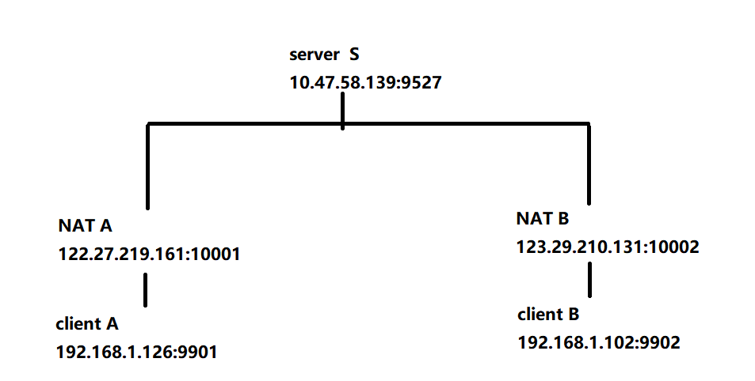

B-2-区块链应用-高级应用开发
1 Go语言实现P2P网络

A和B分别是处于两个局域网的主机，二者进行公网访问时都是通过路由器的NAT技术映射了一个公网地址，对于A和B来说，A和B默认情况下并不知道对方的公网地址。因此想要通信时，必须借助一个第三方服务器S(公网地址是公开的)。 当A和B分别请求与服务器s进行连接时，S同时获得了A和B映射后的公网地址，此时S再将A和B的公网地址分别传递给双方，A和B就知道彼此的地址了。
A和B可以直接通信了，但是由于路由器的安全策略，当有一个默认的地址想要发信息给内部主机时，路由器通常都是拒绝的，也就是说如果该地址没有在路由器内部登记注册，路由器会认为该地址存在风险，直接将网络包丢弃。
那么即便A和B知道对方公网地址，也还是无法通信吗？
不是的，，因为A和B主动发出消息时，会在路由器内部记录对应的公网地址，正因为如此，A和B想要建立P2P通信时，需要分别向对方发送一次请求，才可以建立P2P连接。
https://www.zhihu.com/question/39382183
使用UDP封装的最大好处是，可以使用不同的UDP端口来区分不同的用户隧道，那么一个NAT设备理论上可以支持65K个用户隧道连接。
1、损耗问题。UDP比TCP损耗小，不但是网速损耗，还有控制损耗（即额外一次三次握手，两次窗口控制等）。
2、网络设备支持度。虽然新的nat设备一般都支持“tcp同时打开”方式建立连接，但是网络上很多旧的网络设备（个人测试时，同样两个终端，还有随机失败问题！）；UDP由于是无连接协议，对打洞有天生优势，几乎所有nat设备都支持。
3、关于数据完整性问题，上层的tcp协议会自己处理的。
代码
- p2p.go
1
2
3
4
5
6
7
8
9
10
11
12
13
14
15
16
17
18
19
20
21
22
23
24
25
26
27
28
29
30
31
32
33
34
35
36
37package main
import (
"fmt"
"net"
"time"
)
func main() {
//1 服务器启动侦听
listener, _ := net.ListenUDP("udp", &net.UDPAddr{Port: 9527})
defer listener.Close()
fmt.Println("begin server at ", listener.LocalAddr().String())
//定义切片存储 A和B的地址
peers := make([]*net.UDPAddr, 2)
buf := make([]byte, 256)
//2 从2个UDP消息中分别获取地址A和B
n, addr, _ := listener.ReadFromUDP(buf)
fmt.Printf("read from <%s>: %s\n", addr.String(), buf[:n])
peers[0] = addr
//阻塞的 必须等到之后才能进行连接
n, addr, _ = listener.ReadFromUDP(buf)
fmt.Printf("read from <%s>: %s\n", addr.String(), buf[:n])
peers[1] = addr
//3 将A和B分别介绍给彼此，如果是多个 p2p 点呢？这里维护一个map 点即可。一对一的映射关系
listener.WriteToUDP([]byte(peers[0].String()), peers[1])
listener.WriteToUDP([]byte(peers[1].String()), peers[0])
// 4睡眠10s 确保消息发送完成
time.Sleep(time.Second * 10)
} - p2pclient.go
1
2
3
4
5
6
7
8
9
10
11
12
13
14
15
16
17
18
19
20
21
22
23
24
25
26
27
28
29
30
31
32
33
34
35
36
37
38
39
40
41
42
43
44
45
46
47
48
49
50
51
52
53
54
55
56
57
58
59
60
61
62
63
64
65
66
67
68
69
70
71
72
73
74
75
76
77
78
79
80
81
82
83
84
85
86
87
88
89
90
91
92
93
94
95
96
97package main
import (
"bufio"
"fmt"
"log"
"net"
"os"
"strconv"
"strings"
)
func main() {
//1 设定参数
if len(os.Args) < 5 {
fmt.Println("./client tag remoteIp remotePort port")
return
}
//本地绑定端口
port, _ := strconv.Atoi(os.Args[4])
//客户端标志
tag := os.Args[1]
//服务器ip
remoteIP := os.Args[2]
remotePort, _ := strconv.Atoi(os.Args[3])
//绑定本地端口
localAddr := net.UDPAddr{Port: port}
//2 与服务器建立联系(UDP服务器)
conn, err := net.DialUDP("udp", &localAddr, &net.UDPAddr{
IP: net.ParseIP(remoteIP),
Port: remotePort,
})
if err != nil {
log.Panic("Failed to DialUDP", err)
}
//2.1 自我介绍，表明身份
conn.Write([]byte("我是: " + tag))
//3 从服务器获取另一个客户端地址
buf := make([]byte, 256)
n, _, err := conn.ReadFromUDP(buf)
if err != nil {
log.Panic("Failed to readFromUdp", err)
}
conn.Close()
toAddr := parseAddr(string(buf[:n]))
fmt.Println("目标地址: ", toAddr)
// 4 建立P2P连接通信
p2p(&localAddr, &toAddr)
}
func parseAddr(addr string) net.UDPAddr {
t := strings.Split(addr, ":")
port, _ := strconv.Atoi(t[1])
return net.UDPAddr{
IP: net.ParseIP(t[0]),
Port: port,
}
}
func p2p(srcAddr *net.UDPAddr, dstAddr *net.UDPAddr) {
//1 请求与对方建立联系
conn, _ := net.DialUDP("udp", srcAddr, dstAddr)
//2发送打洞消息
conn.Write([]byte("打洞消息 \n"))
// 3 启动一个goroutine 监控标准输入
go func() {
buf := make([]byte, 256)
for {
//接受UDP消息并打印
n, _, _ := conn.ReadFromUDP(buf)
if n > 0 {
fmt.Printf("收到消息: %sp2p", buf[:n])
}
}
}()
//4 监控输入，发送给对方
reader := bufio.NewReader(os.Stdin)
for {
fmt.Printf("p2p>")
data, _ := reader.ReadString('\n')
conn.Write([]byte(data))
}
}
2 Go语言实现POW共识算法
1 定义区块和数据串行化
定义区块
1 | |
定义区块链
1 | |
定义POW: 工作量证明，需要工作难度参与
需要找到一个随机数nonce,使之和(data,timestamp,prevHash，nonce)等数据的hash结果，满足一定的条件(难度值)
首先初始化一个值为1 的big.Int.
将其左移256-targetBit位。
1 | |
1：
左移1，=2
左移2，=4
左移10，=1024
左移256-24，即为最终难度值.
当找到的nonce对应的hash小于target(难度)则代表找到了.
挖矿逻辑
1 | |
本博客所有文章除特别声明外，均采用 CC BY-SA 4.0 协议 ，转载请注明出处！